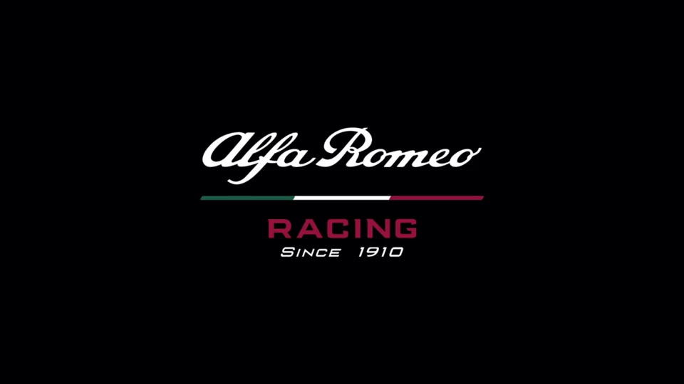
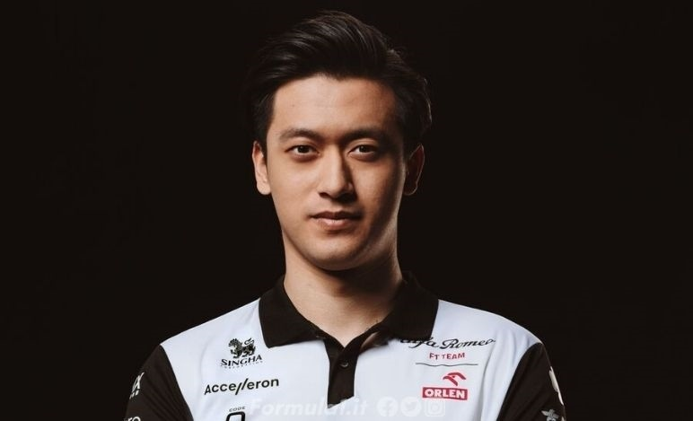

Alfa Romeo

Marque automobile emblématique, Alfa Romeo fut un des premiers constructeurs présents en Formule 1 en 1950. Avec 10 victoires et 12 pole positions, le constructeur italien a permis à Giuseppe Farina en 1950 et Juan Manuel Fangio en 1951 de décrocher les deux premiers titres des pilotes de son histoire en F1.
Les pilotes de la saison 2022 :
Valtteri Bottas
Pilote Mercedes depuis 2017, le Finlandais n’a jamais vraiment été en mesure d’inquiéter Lewis Hamilton pour décrocher un titre malgré quelques brillantes victoires à l’image du Grand Prix de Russie 2017 ou du Grand Prix d’Australie 2019. Durant ses cinq saisons chez Mercedes.
Valtteri Bottas a tout de même été un élément crucial dans la conquête des titres de Mercedes et Lewis Hamilton. Après avoir décroché 10 victoires, 20 pole positions et avoir réussi l’exploit de qualifier sa Mercedes en Q3, Valtteri Bottas s’apprête à débuter un nouveau chapitre dans sa carrière chez Alfa Romeo où il sera le leader naturel d’une écurie en reconstruction.
Guanyo Zhou

Pour la première fois de l’histoire, la Formule 1 va accueillir un pilote chinois dans ses rangs.
Après avoir réalisé des débuts étincelant avec une place de vice-champion en Formule 4 italienne en 2015, Guanyu Zhou a multiplié les passages dans de plusieurs catégories sans véritablement briller. Il remportera un seule championnat, celui d’Asie de F3 en 2021.
Il terminera ensuite 3e du championnat de F2. En 2022, ilréalisera sa première saison en F1, avec Alfa Romeo.